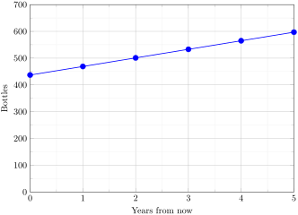
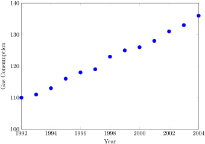
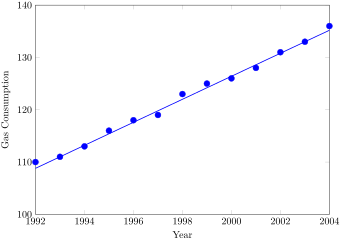

Marco is a collector of antique soda bottles. His collection currently contains 437 bottles. Every year, he budgets enough money to buy 32 new bottles. Can we determine how many bottles he will have in 5 years, and how long it will take for his collection to reach 1000 bottles?
While both of these questions you could probably solve without an equation or formal mathematics, we are going to formalize our approach to this problem to provide a means to answer more complicated questions.
Suppose that \(P_n\) represents the number, or population, of bottles Marco has after n years. So \(P_0\) would represent the number of bottles now, \(P_1\) would represent the number of bottles after 1 year, \(P_2\) would represent the number of bottles after 2 years, and so on. We could describe how Marco’s bottle collection is changing using:
\(P_0 = 437\)
\(P_n = P_{n-1} + 32\)
This is called a recursive relationship. A recursive relationship is a formula which relates the next value in a sequence to the previous values. Here, the number of bottles in year n can be found by adding 32 to the number of bottles in the previous year, \(P_{n-1}\text{.}\) Using this relationship, we could calculate:
\(P_1 = P_0 + 32 = 437 + 32 = 469\)
\(P_2 = P_1 + 32 = 469 + 32 = 501\)
\(P_3 = P_2 + 32 = 501 + 32 = 533\)
\(P_4 = P_3 + 32 = 533 + 32 = 565\)
\(P_5 = P_4 + 32 = 565 + 32 = 597\)
We have answered the question of how many bottles Marco will have in 5 years. However, solving how long it will take for his collection to reach 1000 bottles would require a lot more calculations.
While recursive relationships are excellent for describing simply and cleanly how a quantity is changing, they are not convenient for making predictions or solving problems that stretch far into the future. For that, a closed or explicit form for the relationship is preferred. An explicit equation allows us to calculate \(P_n\) directly, without needing to know \(P_{n-1}\text{.}\) While you may already be able to guess the explicit equation, let us derive it from the recursive formula. We can do so by selectively not simplifying as we go:
You can probably see the pattern now, and generalize that
\(P_n = 437 + n(32) = 437 + 32n\)
Using this equation, we can calculate how many bottles he’ll have after 5 years:
\(P_5 = 437 + 32(5) = 437 + 160 = 597\)
We can now also solve for when the collection will reach 1000 bottles by substituting in 1000 for Pn and solving for n
\(1000 = 437 + 32n\)
\(563 = 32n\)
\(n = 563 \div 32 = 17.59\)
So Marco will reach 1000 bottles in 18 years.
the same number of bottles every year. This constant change is the defining characteristic of linear growth. Plotting the values we calculated for Marco’s collection, we can see the values form a straight line, the shape of linear growth.

Figure4.1.1.Image Credit: RRCC
Definition4.1.2.Linear Growth.
If a quantity starts at size P0 and grows by d every time period, then the quantity after n time periods can be determined using either of these relations:
Recursive form: \(P_n = P_{n-1} + d\)
Explicit form: \(P_n = P_0 + d n\)
In this equation, \(d\) represents the common difference - the amount that the population changes each time n increases by 1
Note4.1.3.Connection to Prior Learning.
You may recognize the common difference, d, in our linear equation as slope. In fact, the entire explicit equation should look familiar - it is the same linear equation you learned in algebra, probably stated as \(y = mx + b\text{.}\)
In the standard algebraic equation \(y = mx + b\text{,}\)\(b\) was the y-intercept, or the y value when x was zero. In the form of the equation we’re using, we are using \(P_0\) to represent that initial amount.
In the \(y = mx + b\) equation, recall that m was the slope. You might remember this as “rise over run”, or the change in y divided by the change in x. Either way, it represents the same thing as the common difference, \(d\text{,}\) we are using - the amount the output Pn changes when the input n increases by 1.
The equations \(y = mx + b\) and \(P_n = P_0 + d n\) mean the same thing and can be used the same ways, we’re just writing it somewhat differently.
Example4.1.4.
The population of elk in a national forest was measured to be 12,000 in 2003, and was measured again to be 15,000 in 2007. If the population continues to grow linearly at this rate, what will the elk population be in 2014?
To begin, we need to define how we’re going to measure \(n\text{.}\) Remember that \(P_0\) is the population when \(n = 0\text{,}\) so we probably don’t want to literally use the year 0. Since we already know the population in 2003, let us define \(n = 0\) to be the year 2003. Then \(P_0 = 12,000\text{.}\)
Next we need to find \(d\text{.}\) Remember \(d\) is the growth per time period, in this case growth per year. Between the two measurements, the population grew by \(15,000-12,000 = 3,000\text{,}\) but it took 2007-2003 = 4 years to grow that much. To find the growth per year, we can divide: \(\frac{3000\text{ elk}}{4\text{ years}} = 750\) elk in 1 year.
Alternatively, you can use the slope formula from algebra to determine the common difference, noting that the population is the output of the formula, and time is the input.
\begin{equation*}
d = \text{slope}=\frac{\text{change in output}}{\text{change in input}}=\frac{15000-12000}{2007 -2003}=
\frac{3000}{4}=750
\end{equation*}
We can now write our equation in whichever form is preferred.
To answer the question, we need to first note that the year 2014 will be \(n = 11\text{,}\) since 2014 is 11 years after 2003. The explicit form will be easier to use for this calculation:
\(P_{11} = 12,000 + 750(11) = 20,250\) elk
Example4.1.5.
Gasoline consumption in the US has been increasing steadily. Consumption data from 1992 to 2004 is shown below
Find a model for this data, and use it to predict consumption in 2016. If the trend continues, when will consumption reach 200 billion gallons?
Table4.1.6.Gas Consumption (1992 - 2004)
Year
Consumption (billions of gallons
1992
110
1993
111
1994
113
1995
116
1996
118
1997
119
1998
123
1999
125
2000
126
2001
128
2002
131
2003
133
2004
136
Plotting this data, it appears to have an approximately linear relationship:

Figure4.1.7.Image Credit: RRCC
While there are more advanced statistical techniques that can be used to find an equation to model the data, to get an idea of what is happening, we can find an equation by using two pieces of the data - perhaps the data from 1993 and 2003.
Letting \(n = 0\) correspond with 1993 would give \(P_0 = 111\) billion gallons.
To find \(d\text{,}\) we need to know how much the gas consumption increased each year, on average. From 1993 to 2003 the gas consumption increased from 111 billion gallons to 133 billion gallons, a total change of \(133 - 111 = 22\) billion gallons, over 10 years. This gives us an average change of \(22 \text{ billion gallons} \div 10 \text{ year} = 2.2\) billion gallons per year.
Equivalently,
\begin{equation*}
d = \frac{\text{change in output}}{\text{change in input}}=\frac{133 - 111}{10-0}=\frac{22}{10} = 2.2
\end{equation*}
We can now write our equation in whichever form is preferred.
Calculating values using the explicit form and plotting them with the original data shows how well our model fits the data.

Figure4.1.8.Image Credit: RRCC
We can now use our model to make predictions about the future, assuming that the previous trend continues unchanged. To predict the gasoline consumption in 2016:
\(n = 23\) (2016 - 1993 = 23 years later)
\(P_{23} = 111 + 2.2(23) = 161.6\)
Our model predicts that the US will consume 161.6 billion gallons of gasoline in 2016 if the current trend continues.
To find when the consumption will reach 200 billion gallons, we would set \(P_n = 200\text{,}\) and solve for n:
This tells us that consumption will reach 200 billion about 40 years after 1993, which would be in the year 2033.
Example4.1.9.
The cost, in dollars, of a gym membership for n months can be described by the explicit equation \(P_n = 70 + 30n\text{.}\) What does this equation tell us?
The value for \(P_0\) in this equation is 70, so the initial starting cost is $70. This tells us that there must be an initiation or start-up fee of $70 to join the gym.
The value for \(d\) in the equation is 30, so the cost increases by $30 each month. This tells us that the monthly membership fee for the gym is $30 a month.
Problem4.1.10.Try It Now.
The number of stay-at-home fathers in Canada has been growing steadily. While the trend is not perfectly linear, it is fairly linear. Use the data from 1976 and 2010 to find an explicit formula for the number of stay-at-home fathers, then use it to predict the number if 2020.
So at 6 years old, we would expect him to be \(P_2 = 39 + 2.5(2) = 44\) inches tall.
Any mathematical model will break down eventually. Certainly, we shouldn’t expect this boy to continue to grow at the same rate all his life. If he did, at age 50 he would be \(P_{46} = 39 + 2.5(46) = 154\) inches tall = 12.8 feet tall!
When using any mathematical model, we have to consider which inputs are reasonable to use. Whenever we extrapolate, or make predictions into the future, we are assuming the model will continue to be valid.